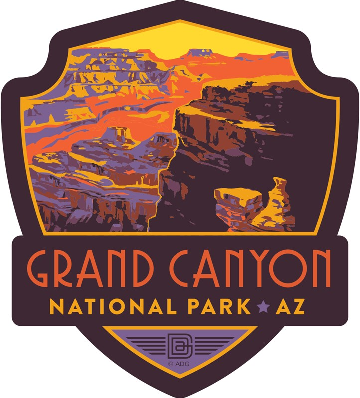

|  | Grand Canyon National Park |
Unique combinations of geologic color and erosional forms decorate a canyon that is 277 river miles (446km) long, up to 18 miles (29km) wide, and a mile (1.6km) deep. Grand Canyon overwhelms our senses through its immense size.
Arizona
Did You Know?
Within the Grand Canyon, the type and abundance of organisms is directly related to the presence or absence of water. The Colorado River and its tributaries, as well as springs, seeps, stock tanks and ephemeral pools provide oases to flora and fauna in this semi-arid southwest desert area.
Grand Canyon National Park Website